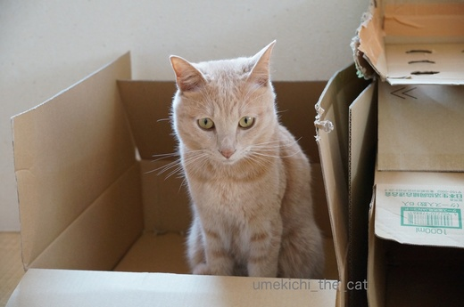
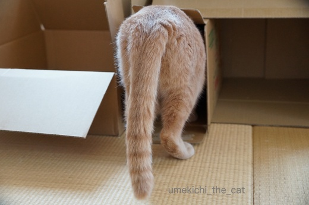
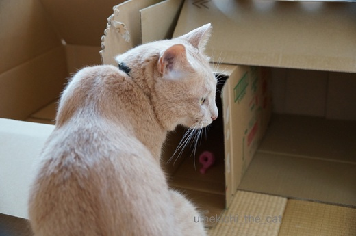

不動産王Umekichi [梅吉]
色々届いたので一気に資産が増えた梅吉さん。

不動産の見回りですか？

西の角の物件から見回る様です＾＾



たんしんしゃよう、ちゅーやつや。


満足げに周りを見回す梅吉さん。
だれかー、ブランデーとガウン持ってきてー。
梅吉の写真が採用された本が届きました！
「梅吉の本」なんて一人で背負って立っている様な言い回し・・・ふふふ
だって梅吉の写真が２枚も採用されたんですよ〜。
最初に採用連絡が来てから後日また連絡があって
最終的に採用されたのは2枚になりました。うれしいなぁ〜。
次はあれとこれに応募して・・・なんて話をしていると「ステージママやね」と言われましたわww

カフェオレ色の梅吉

梅吉 2023年8月10日 永眠


梅吉と出会った譲渡会

犬猫の理由なき殺処分ゼロ
妄想広告
UMEKICHI 光

爆発的に早い！
時々攻撃的！
Thanks to Mr.Boss365
爆発的に早い！
時々攻撃的！
Thanks to Mr.Boss365

写真が採用されるなんて、梅吉さんもスターやね！
肉球のサイン会開かなくっちゃね！
by じゅらまろ (2017-05-17 16:16)
物件をいっぱい持っているとチェックも大変ですね(#^.^#)
梅吉さんが本に♪ 可愛い梅吉さんですもの
採用されますよねぇ～♪
by きぃ (2017-05-17 16:29)
２枚も載るなんてスゴイじゃないですか～(*^^*)梅吉くんカッコイイですよ！
by palpal (2017-05-17 16:40)
素敵物件、梅吉君も満足そうですね！
オモチャつきなんて猫まっしぐら、即満室になりそうですが。
全部梅吉君がひとりで入居予定でしょうね。
梅吉君がついにアイドル猫の仲間入り…じゃんじゃん載ってじゃんじゃん稼いでじゃんじゃんじゃんじゃん…(金吉になってるよ！
by BillK-ko (2017-05-17 18:18)
物件チェックも大事なおしごとだよねー^^
ふふふ。ブランデーにガウン、似合うだろうなあ(笑)
本に２枚も採用されたなんてすごいですよ！！！
これからも楽しみだ〜〜〜〜(^▽^
おめでとう！！！
by リュカ (2017-05-17 18:29)
堂々とした態度で見回りですね～
さすが不動産を豊かにおもちの梅吉さん＾＾
わ、２枚も採用されたんですか～すごい！
なんてかわいい写真♪
by sana (2017-05-17 20:17)
をぉ！カワイイとユニーク、両方の梅吉くんですね！！
この「にょ〜ん」が大好き（╹◡╹）♡
印税でさらなる不動産投資？？^_−☆
by も〜 (2017-05-17 20:58)
大小より取り見取り、毎日どこで寝るか迷っちゃいそうです(*^▽^*)
にゃんちゅーぶ、大きなお写真が2枚も！！
梅吉さんかっこいい～(^_-)-☆
by ゆきち (2017-05-17 21:29)
まずは写真の掲載おめでとうございます。
続きまして、2枚の掲載おめでとうございます。
凄いことですね。
で、資産家の梅吉さん、どのくらいの時間をかけて、見回るのでしょうか。
サッサと出入りをするのか？
ジックリと居心地を確かめるのか？
そばで見ていると、楽しいでしょうね。
by kiki (2017-05-17 21:33)
物件チェックのおちりが可愛い♪
ん？ひょっとして物件の隅っこ、齧ってない？^^;
写真掲載2枚採用、おめでとうございます！^^)
by yes_hama (2017-05-17 22:08)
尻尾の輪っかが先に行くほど間隔短くなってる梅吉さん。素敵!
サイン会には私も行きたいです。大スターへの道まっしぐらね。
by zombiekong (2017-05-18 00:53)
すごいですねぇヾ(*´∀｀*)ﾉ
梅吉さん、素敵なお写真掲載されて！！
私もうちの子達のお写真を投稿しまくってますｗｗ
by sumi-cyan (2017-05-18 02:33)
おぉ♪(ﾉ)’∀｀(ヾ)
これは私も買わないと～。なんだか私まで嬉しい♡
お風呂写真も売り込んで下さい！（変態ですね、わたしｗ）
by muku (2017-05-18 10:14)
ちぃさん
こんにちは！＾＾
そのくらい物件が沢山あると楽しいかもしれませんね。
梅ちゃんの写真掲載、おめでとうございます！
2枚も採用されるなん凄いですよ＾＾
by kiyokiyo (2017-05-18 16:39)
下品で油ギッシュなUSA不動産王と対照な梅ちゃま。ああ・・・でもメジャーデビューしてしまっていたのね・・・ワルイ女が近づきませんように！
by Ginger (2017-05-18 17:54)
訪問ありがとうございました。
梅吉くん、わたしがかわいがっている元のらの茶太郎にそっくりです。ホントに似てます。「あけがらすひで 茶太郎のその後」または「気まぐれ日記 STRAY CAT その5、同じ境遇に思う」で検索しますと写真が載っています。
by 暁烏 英（あけがらす ひで） (2017-05-18 21:30)
うゎ 梅吉さんステキ＾＾
ステージママ？ 愛ね❤ 沢山の物件も愛ね(笑)
by みいこ (2017-05-19 07:59)
眼力の有る梅吉君の管理・見回りでは
誰も悪い事は出来ないでしょう・・・
少し心身を休めても大丈夫だと思いますよ～(笑)
写真集に登場の梅吉君ですか～
一躍、有名ニャンコ君になりましたね～(^_^♪)
by makkun (2017-05-19 15:12)
じゅらまろさん＞サイン会ね！
肉球印とガブガブの赤い線（腕か足に）どちらか選べる様にするわ！！
詳細は近日お知らせしますね〜(^_－)☆
きぃさん＞「いそがしゅうてかなわんわ〜」とは梅吉談＾＾
にゃんこ、
こにゃんこやお目目くりっくりの可愛い子が圧倒的に多い写真の中で
梅吉は個性派として採用されたのかもしれませんww
palpalさん＞２枚も採用されるとは思っていなかったのでびっくりでした。
今年の採用運を使い果たした様な気もしてマス^^;
BillK-koさん＞そうなの！入居者募集しないのよ〜。
物件、貸しに出さなくても維持してて行けるなんて梅吉以外にやり手！？
アイドルなんて照れますわ〜(〃▽〃)
でも多分、いじられ役かお笑い担当よ(＠◇＠)
リュカさん＞なんか昭和のお金持ちのイメージしかなくって〜ww
しかもガウンに、ブランデーは頭の中で石原裕次郎になってます。
トシがバレる^^;（あ、裕ちゃん世代ではないわよ！！）
梅吉の写真掲載は運が良かっただけかと・・・・
でもまたがんばりたいわ！！
sanaさん＞なかなか堂に入った見回りでしょう〜。
資産が梅吉をひとかどのにゃんこにした様です(ﾉ≧▽≦)ﾉ
写真が２枚も採用されるとは思っていなかったのでびっくりしました。
でも今年の運はこれで終わりかも・・・^^;
も〜さん＞そうなんです！正にかわいい路線とウケ狙いの面白写真で
攻めて見ました＾＾
印税！！ソロ写真集を目指そうかしら・・・
ゆきちさん＞所有物件は気分によって使い分けている様です。
でもそろそろ片付けたい・・・・生前分与して下さいと梅吉と交渉中です＾＾
愛猫の写真が掲載されるって嬉しいですね！
お楽しみとして色々応募して見たい・・・
その前にもう少し写真をうまく撮らなければと思っています。
by ちぃ (2017-05-19 15:41)
kikiさん＞ありがとうございま〜すww
自分で撮ってPCをひらけばいつでも見られる写真なのに
本になるとまた違った味わいです。くせになりそう・・・・＾＾
不動産王の見回りは滞在もあったりして結構時間がかかります。
物件に愛着を持っているのかも〜(ﾉ≧▽≦)ﾉ
yes_hamaさん＞おちりはぷりっぷりして可愛いんですよ〜。
動画でお届けできなくて残念！
物件のメンテナンスに「齧る」は重要事項なようです。
自分のマークつける、みたいな(^｡^)
zombiekongさん＞いつも目の付け所がさすがでいらっしゃる！
梅吉の尻尾は濃い模様ではないのですが
うっすらしたシマがグラデーションの様になっていま〜す＾＾
大スターなんて！！
有名になるよりも記憶に残るニャンコでいたい・・・
なんつって〜(ﾉ≧▽≦)ﾉ
sumi-cyanさん＞素敵なお写真だなんてありがとうございます♪
投稿しまくり！？被写体が沢山いてうらやましい〜。
多頭飼いも大きな武器ですよね！
mukuさん＞一緒に喜んでいただけてうれしいです〜♪
お風呂写真・・・ふふふふふ・・・・せっせと売り込みますよ(ﾉ≧▽≦)ﾉ
マニア、意外に多そうだもの！！
kiyokiyoさん＞コメントありがとうございます♪
いつもはさっさと片付けちゃう私ですがちょっと遊んでみました〜。
すぐに飽きるかと思ったらさすがにゃんこで楽しそうに中に入っています＾＾
いまは片付けるタミングを狙っていますよ・・・
２枚の写真掲載はびっくりしました。
正反対のタイプの写真で攻めてみたのが良かったのかもww
by ちぃ (2017-05-19 17:41)
Gingerさん＞ワルイ女、ステージママが常に監視しているので多分大丈夫です！
なにより梅吉マザコンだし(((*≧艸≦)
暁烏 英さん＞コメントありがとうございます♪
チャ君、色合い表情など本当に梅吉に似ていますね〜！びっくりです(・o・)
足に怪我をしながらもN夫妻様のおかげで窮地を脱したのですね。
温かい方に囲まれて良かった、良かった。
梅吉も元ノラ猫。境遇が重なってチャ君のお話他人事とは思えませんでした。
ただ、チャ君の様に人に阿ることなくとは行かず
あまあまの甘ったれなんですよ〜＾＾
また梅吉を見にいらして下さいね。
by ちぃ (2017-05-19 20:37)
みいこさん＞そうなのー。
我が子が可愛くて愛情てんこ盛り・・・・ああ、親バカ(⌒-⌒; )
makkunさん＞おお、お気遣いのお言葉！
梅吉にはあまり根を詰めない様に伝えておきます＾＾
有名ニャンコ、いえいえ◯◯48の総選挙、番外みたいな若輩者です(〃▽〃）
by ちぃ (2017-05-19 20:44)